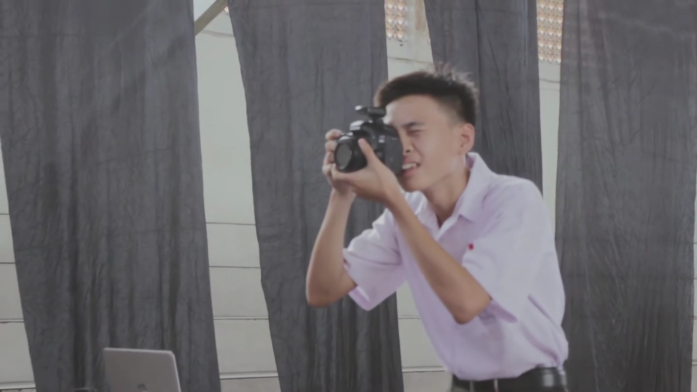
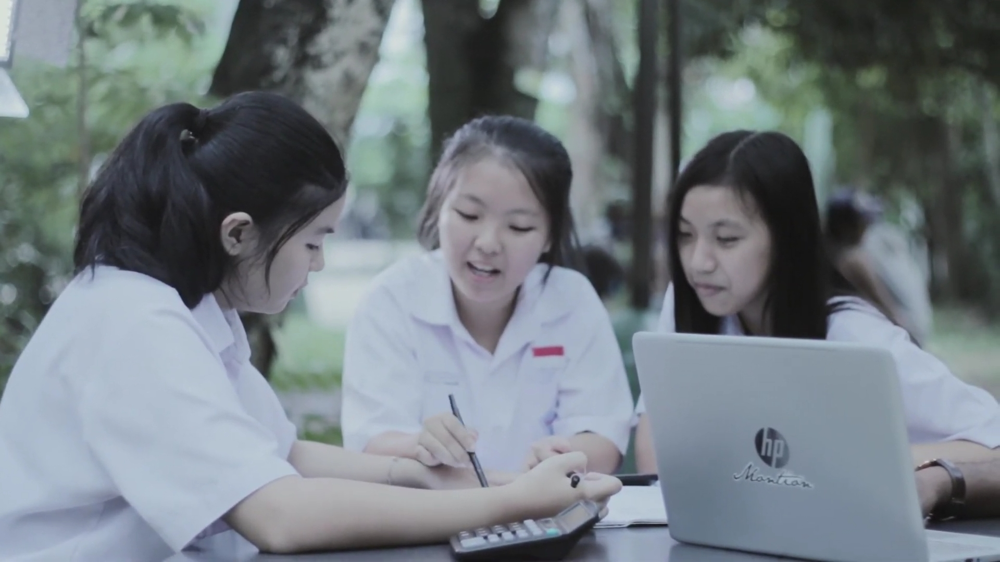
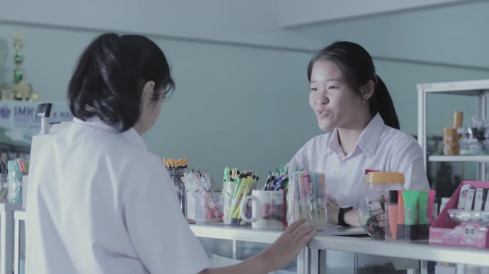

Jurusan Yang Ada di SMK Santa Maria
Jurusan MultiMedia

Bagi adik- adik siswa SMP yang ingin melanjutkan ke SMK dan masih bingung dengan jurusan apa yang ingin dipilih, berikut ini salah satu jurusan yang sesuai dengan perkembangan teknologi sekarang ini yaitu jurusan multimedia. Mengingat bahwa jurusan multimedia adalah jurusan yang mempunyai ruang lingkup pekerjaan dan profesi yang luas, jurusan multimedia SMK adalah jurusan yang banyak difavoritkan bagi sebagian besar siswa lulusan SMP dan sederajat selain jurusan Teknik Komputer dan Jaringan (TKJ). Selain itu jurusan Multimedia juga memberikan peluang bagi lulusannya untuk membuka usaha atau berwirausaha sendiri dalam bidang multimedia.
Pada dasarnya multimedia dibagi menjadi dua jenis kategori yaitu multimedia linier dan multimedia interaktif. Multimedia linier merupakan multimedia yang berjalan tanpa dilengkapi dengan alat pengontrol yang dapat dioperasikan pengguna misalnya film dan televisi. Sedangkan multimedia interaktif merupakan multimedia yang dilengkapi dengan alat pengontrol yang dapat dioperasikan oleh pengguna sehingga terjadi interaksi dengan pengguna contohnya pada game atau pembelajaran secara multimedia.
Peluang pekerjaan bagi lulusan jurusan multimedia juga sangat terbuka lebar karena saat ini Indonesia menghadapi era MEA (Masyarakat Ekonomi Asia) yang membutuhkan ahli- ahli teknologi khususnya dalam bidang komputer dan multimedia. Sesuai dengan standar bidang teknologi dan informatika jurusan multimedia, pekerjaan yang relevan atau sesuai dengan jurusan multimedia adalah meliputi :
- Pengembang Web (Web Development) terdiri dari Pembuat Web dan Pemelihara Web.
- Pengembang Multimedia (Multimedia Development) terdiri dari Pembuat Multimedia dan Pemelihara Multimedia.
- Pengembang Permainan (Game Development) terdiri dari Pembuat permainan (games) dan Pembuat media simulasi ( simulator).
- Rumah Produksi Sinema/Film (Production House) terdiri dari Pembuat video klip dan Penyunting video.
- Industri Media dan Periklanan (Media and Advertisement) terdiri dari Pembuat animasi dan Pembuat media informasi.
Jurusan Akuntansi

Sekolah dijurusan akuntansi pada intinya sama dengan jurusan lainnya seperti ekonomi. Ada dasarnya pada jurusan ini banyak memfokuskan pada pembuatan seputar laporan keuangan, mulai dari jurnal umum hingga menjadi neraca saldo atau juga hingga jurnal pembalik.
Dalam mendukung kegiatanpembelajaran, pada bidang keahlian akuntansi pula menggunakan aplikasi dalam pembelajarannya. Pada umumnya aplikasi yang digunakan ialah MYOB Accounting (Mind Your Own Business). MYOB Accounting ini banyak dipakai untuk mempermudah dalam pembuatan laporan keuangan secara mudah dan akurat mulai dari penjurnalan awal hingga pada neraca saldo.
Mata pelajaran yang akan kamu pelajari pada jurusan ini di dikelompokkan menjadi empat yaitu NORMATIF, ADAPTIF, PRODUKTIF dan MUATAN LOKAL.
Jurusan Pemasaran

Jurusan pemasaran adalah jurusan yang mempelajari seluk beluk pasar secara meluas termasuk menciptakan produk yang berkualitas. jurusan pemasaran merupakan jurusan yang paling banyak diminati, karena pelajarannya yang sebagian besar materi bisnis.
Keuntungan masuk jurusan pemasaran diantaranya:
- Jurusan pemasaran belajar materi
- Di jurusan pemasaran ada praktek kejuruan yang dapat meningkatkan keahlian
- siswa jurusan pemasaran akan mendapat sertifikat